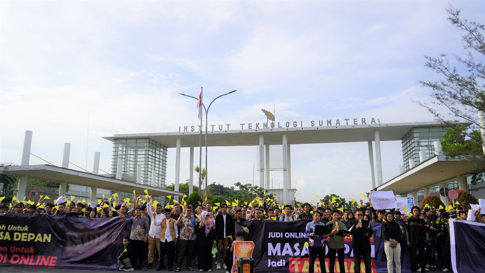

Rektor Itera Resmikan Gedung Student Centre, Fasilitas Baru untuk Mahasiswa
Date: 14 Februari 2025

ITERA NEWS – Institut Teknologi Sumatera (Itera) meresmikan Gedung Student Centre sebagai pusat kegiatan mahasiswa pada Jumat, 14 Februari 2025. Peresmian ditandai dengan pemotongan tumpeng oleh Rektor Itera, Prof. Dr. I Nyoman Pugeg Aryantha, didampingi Wakil Rektor Bidang Akademik dan Kemahasiswaan, Prof. Dr. Eng. Khairurrijal, M.Si., serta Wakil Rektor Bidang Keuangan dan Umum, Ir. Arif Rohman, S.T., M.T. Turut hadir Presiden Keluarga Mahasiswa Itera, jajaran pimpinan biro dan fakultas, serta perwakilan organisasi mahasiswa (Ormawa).
Dalam laporannya, Wakil Rektor Bidang Keuangan dan Umum, Ir. Arif Rohman, S.T., M.T., selaku menyampaikan bahwa pembangunan Gedung Student Centre didanai oleh PNBP Itera dan dikerjakan oleh Sempurna Jaya Konsorsium. Gedung ini memiliki luas 1.038 m² dengan kapasitas hingga 1.100 orang dan terdiri dari 21 ruangan yang diperuntukkan bagi berbagai unit kegiatan mahasiswa (UKM) dan himpunan mahasiswa.
“Pembangunan ini masih belum selesai sepenuhnya dan akan kami terus tingkatkan fasilitasnya. Namun, ke depan gedung ini diharapkan dapat menampung seluruh UKM dan himpunan mahasiswa di Itera,” ujar Arif Rohman.
Direktur Sempurna Jaya Konsorsium M. Hafiz Saktiadi, menyampaikan terima kasih kepada Itera atas kepercayaan yang diberikan kepada pihaknya dalam pembangunan gedung ini.
Mahasiswa perwakilan UKM BSM Itera, Ari turut menyampaikan harapannya agar Gedung Student Centre menjadi wadah yang mempererat komunikasi antarorganisasi mahasiswa. “Saya berharap gedung ini menjadi tempat mahasiswa Itera untuk berinteraksi, berkolaborasi, dan menghindari perselisihan antarorganisasi. Dengan saling merangkul, kita dapat bersama-sama berprestasi dan membanggakan Itera,” ujarnya.
Dengan diresmikannya Gedung Student Centre ini, diharapkan mahasiswa Itera semakin aktif dalam berkegiatan serta terus mengembangkan potensi diri guna mendukung kemajuan kampus.
Sivitas Akademika Itera Gelar Deklarasi Anti Judi Online
Date: 14 Februari 2025

ITERA NEWS – Ratusan sivitas akademika Institut Teknologi Sumatera (Itera), yang terdiri dari mahasiswa, dosen, dan tenaga kependidikan, menggelar Deklarasi Anti Judi Online di Gerbang Utama Kampus Itera, Jumat, 14 Februari 2025. Deklarasi ini menjadi bukti nyata komitmen Itera dalam menciptakan lingkungan akademik yang sehat, bermoral, dan bebas dari praktik perjudian online.
Kegiatan ini dihadiri langsung oleh Rektor Itera, Prof. Dr. I Nyoman Pugeg Aryantha, Wakil Rektor Bidang Akademik dan Kemahasiswaan, Prof. Dr.Eng. Khairurrijal, M.Si., Wakil Rektor Bidang Keuangan dan Umum, Ir. Arif Rohman, S.T., M.T., serta jajaran pimpinan dan organisasi kemahasiswaan.
Mahasiswa dari berbagai program studi tampak antusias mengikuti deklarasi ini dengan membawa spanduk berisikan ajakan memerangi judi online, dan simbol bendera kuning. Puncak acara ditandai dengan pembacaan deklarasi oleh unsur dosen yang diwakili Kepala Pusat Kemahasiswaan, Dr. Vico Luthfi Ipmawan, S.Pd., M.Sc., tenaga kependidikan yang diwakili Ketua Tim Kerja Hukum, Saputro Prayitno, S.H., M.H., serta Presiden KM-Itera Muhammad Rizky Saputra membacakan tiga poin deklarasi Anti Judi Online Itera. Poin-poin tersebut mencakup menyerukan pemberantasan judi online dalam segala bentuknya, menuntut aparat penegak hukum untuk bertindak tegas terhadap semua pihak yang terlibat dalam bisnis judi online sesuai peraturan yang berlaku, dan mendukung edukasi masyarakat mengenai dampak negatif judi online terhadap ekonomi, sosial, budaya, dan agama.
Dalam kesempatan tersebut, Rektor Itera, Prof. Dr. I Nyoman Pugeg Aryantha, menegaskan bahwa Itera berkomitmen kuat untuk memberantas segala bentuk perjudian, khususnya judi online. “Itera ingin menciptakan generasi muda yang berpikir jernih, bekerja keras, dan berkontribusi nyata bagi bangsa tanpa terbuai oleh iming-iming instan,” ujar Rektor. Ia juga berpesan kepada mahasiswa bahwa keberhasilan sejati hanya dapat diraih melalui kerja keras, kerja tuntas, dan kerja ikhlas.